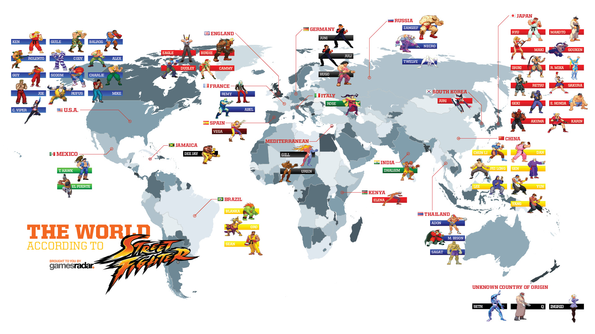

Street Fighter
A franquia "Street Fighter" é uma das séries de jogos de luta mais icônicas e influentes da história dos videogames. Aqui está um resumo abrangente da franquia:
A franquia "Street Fighter" foi iniciada em 1987 com o lançamento do jogo de fliperama original "Street Fighter". Ele apresentava Ryu e Ken, dois lutadores que competiam em todo o mundo em busca de desafios.
Z A franquia é conhecida por sua ampla gama de personagens jogáveis, cada um com seu próprio estilo de luta, história e movimentos especiais. Alguns dos personagens mais icônicos incluem Ryu, Ken, Chun-Li, Guile, Blanka, Zangief e muitos outros.
Os jogos da série "Street Fighter" são baseados em lutas 1 contra 1, onde os jogadores escolhem um personagem e enfrentam adversários em uma série de lutas. A jogabilidade é conhecida por sua profundidade estratégica, combos e movimentos especiais.

A série evoluiu ao longo dos anos com várias iterações, incluindo "Street Fighter II," que é amplamente considerado um dos jogos mais influentes de todos os tempos, "Street Fighter III," "Street Fighter IV," "Street Fighter V" e outros. Cada nova versão trouxe melhorias gráficas e de jogabilidade.

"Street Fighter" é uma das franquias mais populares em competições de jogos de luta. Torneios de "Street Fighter" são realizados em todo o mundo, com jogadores profissionais competindo em eventos como o "Capcom Cup."
A franquia se expandiu para incluir adaptações em várias outras formas de mídia, incluindo quadrinhos, desenhos animados, filmes e brinquedos. O filme "Street Fighter: O Último Desafio" é uma das adaptações cinematográficas mais conhecidas.

"Street Fighter" desempenhou um papel significativo na popularização dos jogos de luta e na cultura dos videogames como um todo. Os personagens e a estética da série são amplamente reconhecidos e influenciaram outros jogos e mídias.
A franquia "Street Fighter" continua a ser popular, com novos lançamentos e conteúdo sendo produzidos regularmente. Ela mantém uma base de fãs dedicada e é uma parte fundamental da história dos videogames. Em resumo, "Street Fighter" é uma franquia de jogos de luta que definiu os padrões do gênero e deixou um legado duradouro na indústria de videogames e na cultura popular. Ela é conhecida por sua jogabilidade estratégica, personagens carismáticos e competições de alto nível.